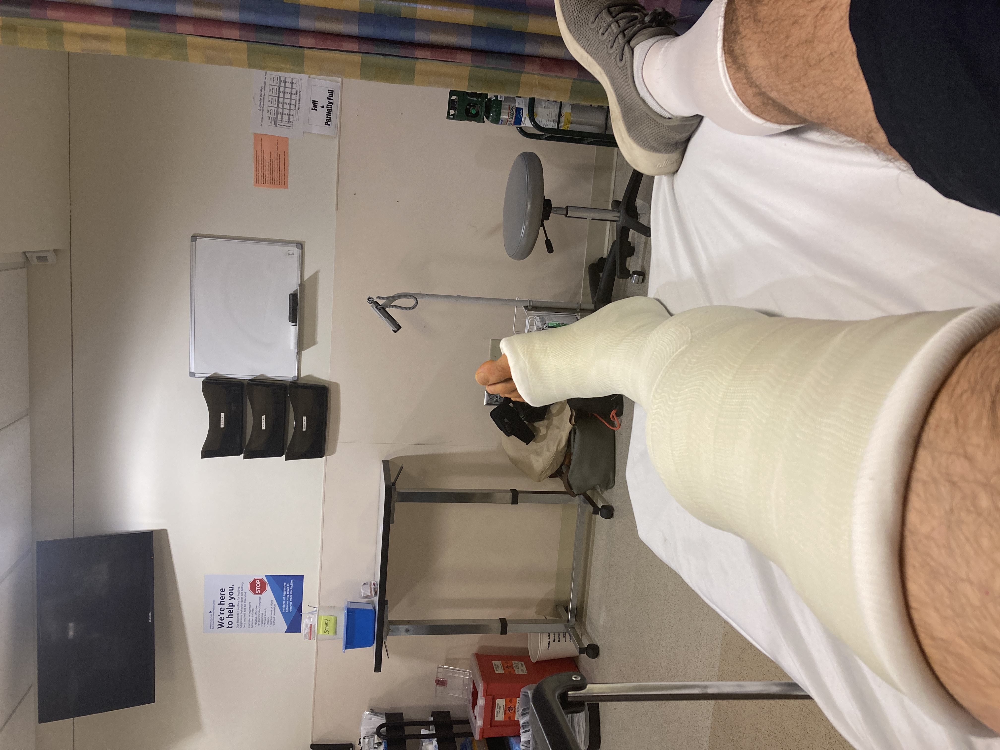
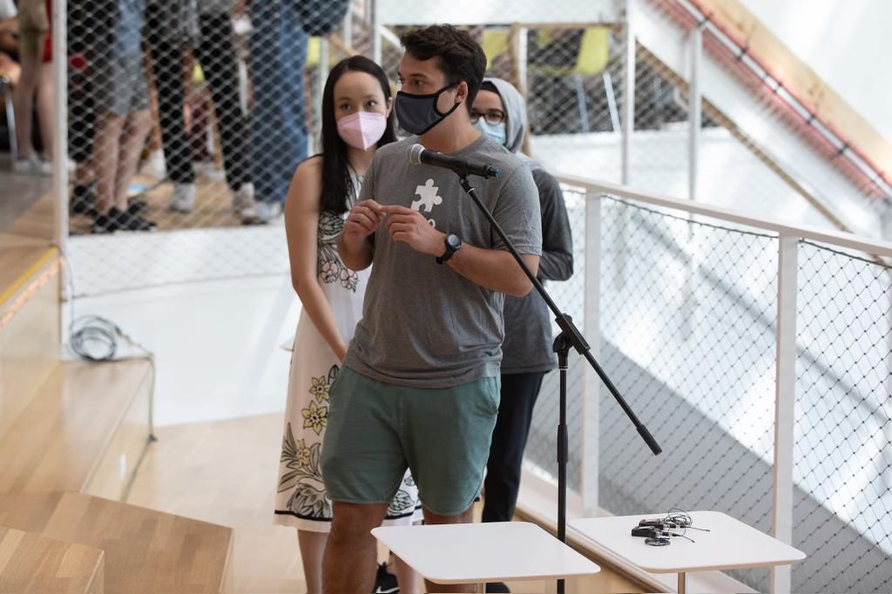

i don't have any super concrete ideas for my project yet, i'm hoping to refine these as the semester goes on, but here are a couple of ideas i have so far
i tore my patellar tendon, acl, and meniscus last semester, so i've been thinking about something that could help me (and maybe others) in the recovery process. one idea i've had is a motion-tracking device that can help people see whether they're doing their pt exercises correctly. another potential idea along these lines would be something to help people who just had surgery with a simple everyday task (i couldn't put my own socks on for more than a month).
i've been involved in computer science education for around five years now, and i'd be interested in the idea of making a device that kids could program to make learning cs more physical. it would be cool to allow kids to actually move physical blocks around to make a device move and get excited about programming without just looking at a computer screen.
While I still could change my mind, right now I'm starting to research the idea of making a kit that will help kids learn to code by physically dragging code blocks around. Here's what I found in my research while looking forr similar things that already exist: